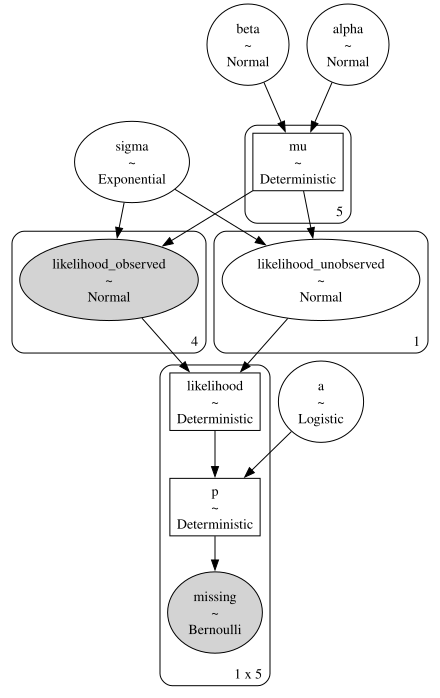

import arviz as az
import numpy as np
import pymc as pm
from pymc.math import dot, stack, concatenate, exp, invlogit
2. Rats Example with Missing Data*#
This example goes further into dealing with missing data in PyMC, including in the predictor variables.
Adapted from Unit 8: ratsignorable1.odc, ratsignorable2.odc, and ratsinformative.odc.
Data can be found here.
Problem statement#
We had a previous example about dugongs that dealt with missing data in the observed data (y values). This example shows how to deal with missing data in the input data (x). It’s still pretty easy. You could look at it like creating another likelihood in the model, a very simple one where the observed data is x, and you use a single distribution to fill in the missing values (see x_imputed in the model below).
Original paper here.
Gelfand et al 1990 consider the problem of missing data, and delete the last observation of cases 6-10, the last two from 11-20, the last 3 from 21-25 and the last 4 from 26-30. The appropriate data file is obtained by simply replacing data values by NA (see below). The model specification is unchanged, since the distinction between observed and unobserved quantities is made in the data file and not the model specification.
x = np.array([8.0, 15.0, 22.0, 29.0, 36.0])
# import y data and create mask (missing data is represented as nan in the file)
y = np.loadtxt("../data/rats.txt")
y
array([[151., 199., 246., 283., 320.],
[145., 199., 249., 293., 354.],
[147., 214., 263., 312., 328.],
[155., 200., 237., 272., 297.],
[135., 188., 230., 280., 323.],
[159., 210., 252., 298., nan],
[141., 189., 231., 275., nan],
[159., 201., 248., 297., nan],
[177., 236., 285., 350., nan],
[134., 182., 220., 260., nan],
[160., 208., 261., 313., nan],
[143., 188., 220., nan, nan],
[154., 200., 244., nan, nan],
[171., 221., 270., nan, nan],
[163., 216., 242., nan, nan],
[160., 207., 248., nan, nan],
[142., 187., 234., nan, nan],
[156., 203., 243., nan, nan],
[157., 212., 259., nan, nan],
[152., 203., 246., nan, nan],
[154., 205., 253., nan, nan],
[139., 190., nan, nan, nan],
[146., 191., nan, nan, nan],
[157., 211., nan, nan, nan],
[132., 185., nan, nan, nan],
[160., nan, nan, nan, nan],
[169., nan, nan, nan, nan],
[157., nan, nan, nan, nan],
[137., nan, nan, nan, nan],
[153., nan, nan, nan, nan]])
Model 1#
This first model we only have missing data in our response variable (y). Notice that I made the shapes of alpha and beta (30, 1) instead of just 30. This is so that they broadcast correctly when combined (mu = alpha + beta * x). The NumPy docs have a helpful page about broadcasting.
prior_tau = 1e-4
with pm.Model() as m:
alpha_c = pm.Normal("alpha_c", 0, tau=prior_tau)
alpha_tau = pm.Gamma("alpha_tau", 0.001, 0.001)
beta_c = pm.Normal("beta_c", 0, tau=prior_tau)
beta_tau = pm.Gamma("beta_tau", 0.001, 0.001)
alpha = pm.Normal(
"alpha", alpha_c, tau=alpha_tau, shape=(30, 1)
) # (30, 1) for broadcasting
beta = pm.Normal("beta", beta_c, tau=beta_tau, shape=(30, 1))
lik_tau = pm.Gamma("lik_tau", 0.001, 0.001)
sigma = pm.Deterministic("sigma", 1 / lik_tau**0.5)
mu = alpha + beta * x
pm.Normal("likelihood", mu, tau=lik_tau, observed=y)
trace = pm.sample(
5000,
tune=4000,
init="jitter+adapt_diag_grad",
target_accept=0.95,
)
az.summary(
trace,
hdi_prob=0.95,
var_names=["alpha_c", "alpha_tau", "beta_c", "beta_tau", "sigma"],
kind="stats",
)
| mean | sd | hdi_2.5% | hdi_97.5% | |
|---|---|---|---|---|
| alpha_c | 101.153 | 2.288 | 96.525 | 105.542 |
| alpha_tau | 0.028 | 0.104 | 0.004 | 0.050 |
| beta_c | 6.569 | 0.164 | 6.242 | 6.891 |
| beta_tau | 2.851 | 1.212 | 0.927 | 5.181 |
| sigma | 6.024 | 0.655 | 4.816 | 7.330 |
Model 2: Imputing missing predictor variable data#
This is the same model, except we now have missing x data.
x_miss = np.array([8.0, 15.0, 22.0, np.nan, 36.0])
x_miss
array([ 8., 15., 22., nan, 36.])
prior_tau = 1e-4
with pm.Model() as m:
alpha_c = pm.Normal("alpha_c", 0, tau=prior_tau)
alpha_tau = pm.Gamma("alpha_tau", 0.001, 0.001)
beta_c = pm.Normal("beta_c", 0, tau=prior_tau)
beta_tau = pm.Gamma("beta_tau", 0.001, 0.001)
alpha = pm.Normal("alpha", alpha_c, tau=alpha_tau, shape=(30, 1))
beta = pm.Normal("beta", beta_c, tau=beta_tau, shape=(30, 1))
lik_tau = pm.Gamma("lik_tau", 0.001, 0.001)
sigma = pm.Deterministic("sigma", 1 / lik_tau**0.5)
x_imputed = pm.Normal("x_imputed", mu=20, sigma=5, observed=x_miss)
mu = alpha + beta * x_imputed
pm.Normal("likelihood", mu, tau=lik_tau, observed=y)
trace_2 = pm.sample(
5000, tune=4000, init="jitter+adapt_diag_grad", target_accept=0.87
)
az.summary(trace_2, hdi_prob=0.95, var_names=["x_imputed"])
/Users/aaron/miniforge3/envs/pymc_f25_2/lib/python3.13/site-packages/arviz/stats/diagnostics.py:596: RuntimeWarning: invalid value encountered in scalar divide
(between_chain_variance / within_chain_variance + num_samples - 1) / (num_samples)
/Users/aaron/miniforge3/envs/pymc_f25_2/lib/python3.13/site-packages/arviz/stats/diagnostics.py:991: RuntimeWarning: invalid value encountered in scalar divide
varsd = varvar / evar / 4
/Users/aaron/miniforge3/envs/pymc_f25_2/lib/python3.13/site-packages/arviz/stats/diagnostics.py:596: RuntimeWarning: invalid value encountered in scalar divide
(between_chain_variance / within_chain_variance + num_samples - 1) / (num_samples)
/Users/aaron/miniforge3/envs/pymc_f25_2/lib/python3.13/site-packages/arviz/stats/diagnostics.py:991: RuntimeWarning: invalid value encountered in scalar divide
varsd = varvar / evar / 4
| mean | sd | hdi_2.5% | hdi_97.5% | mcse_mean | mcse_sd | ess_bulk | ess_tail | r_hat | |
|---|---|---|---|---|---|---|---|---|---|
| x_imputed[0] | 8.000 | 0.000 | 8.000 | 8.000 | 0.000 | NaN | 20000.0 | 20000.0 | NaN |
| x_imputed[1] | 15.000 | 0.000 | 15.000 | 15.000 | 0.000 | NaN | 20000.0 | 20000.0 | NaN |
| x_imputed[2] | 22.000 | 0.000 | 22.000 | 22.000 | 0.000 | NaN | 20000.0 | 20000.0 | NaN |
| x_imputed[3] | 29.455 | 0.387 | 28.682 | 30.207 | 0.002 | 0.003 | 25583.0 | 16308.0 | 1.0 |
| x_imputed[4] | 36.000 | 0.000 | 36.000 | 36.000 | 0.000 | NaN | 20000.0 | 20000.0 | NaN |
az.summary(
trace_2,
hdi_prob=0.95,
var_names=["alpha_c", "beta_c", "alpha_tau", "beta_tau", "lik_tau"],
kind="stats",
)
| mean | sd | hdi_2.5% | hdi_97.5% | |
|---|---|---|---|---|
| alpha_c | 101.715 | 2.353 | 97.130 | 106.496 |
| beta_c | 6.516 | 0.168 | 6.181 | 6.838 |
| alpha_tau | 0.021 | 0.051 | 0.004 | 0.042 |
| beta_tau | 2.981 | 1.273 | 0.996 | 5.448 |
| lik_tau | 0.029 | 0.006 | 0.017 | 0.041 |
Model 3: Non-ignorable missingness#
Odds of missingness increases approx. at a rate of 1% with increasing the weight.
y = np.atleast_2d(
np.array([177.0, 236.0, 285.0, 350.0, -1])
) # original value was 320
y = np.ma.masked_values(y, value=-1) # create masked array
# y.mask is equivalent to the "miss" array from the professor's example
miss = y.mask
x = np.array([8.0, 15.0, 22.0, 29.0, 36.0])
t = 0.1
s = 1 / t # convert BUGS dlogis tau to s for pymc
b = np.log(1.01)
with pm.Model() as m:
a = pm.Logistic("a", mu=0, s=s)
# adjusting alpha, beta, sigma priors to be weakly informative compared
# to old flat priors in order to get rid of divergences.
alpha = pm.Normal("alpha", 0, 10)
beta = pm.Normal("beta", 0, 10)
sigma = pm.Exponential("sigma", 0.01)
mu = pm.Deterministic("mu", alpha + beta * x)
y_imputed = pm.Normal("likelihood", mu, sigma, observed=y)
p = pm.Deterministic("p", invlogit(a + b * y_imputed))
pm.Bernoulli("missing", p=p, observed=miss)
trace_3 = pm.sample(
5000,
tune=4000,
init="adapt_diag",
target_accept=0.95,
)
pm.model_to_graphviz(m)

az.summary(trace_3, hdi_prob=0.95, kind="stats")
| mean | sd | hdi_2.5% | hdi_97.5% | |
|---|---|---|---|---|
| a | -5.204 | 1.506 | -8.263 | -2.464 |
| alpha | 2.548 | 10.043 | -16.816 | 22.017 |
| beta | 13.281 | 1.852 | 9.658 | 17.159 |
| likelihood_unobserved[0] | 509.814 | 98.367 | 328.598 | 718.465 |
| sigma | 69.027 | 37.265 | 23.474 | 142.419 |
| mu[0] | 108.797 | 15.665 | 76.220 | 139.202 |
| mu[1] | 201.766 | 27.059 | 147.625 | 257.509 |
| mu[2] | 294.734 | 39.436 | 214.536 | 374.400 |
| mu[3] | 387.703 | 52.101 | 284.710 | 495.874 |
| mu[4] | 480.671 | 64.885 | 354.731 | 617.973 |
| likelihood[0, 0] | 177.000 | 0.000 | 177.000 | 177.000 |
| likelihood[0, 1] | 236.000 | 0.000 | 236.000 | 236.000 |
| likelihood[0, 2] | 285.000 | 0.000 | 285.000 | 285.000 |
| likelihood[0, 3] | 350.000 | 0.000 | 350.000 | 350.000 |
| likelihood[0, 4] | 509.814 | 98.367 | 328.598 | 718.465 |
| p[0, 0] | 0.063 | 0.076 | 0.000 | 0.217 |
| p[0, 1] | 0.102 | 0.110 | 0.000 | 0.333 |
| p[0, 2] | 0.146 | 0.144 | 0.000 | 0.448 |
| p[0, 3] | 0.225 | 0.190 | 0.000 | 0.608 |
| p[0, 4] | 0.484 | 0.271 | 0.004 | 0.912 |
%load_ext watermark
%watermark -n -u -v -iv -p pytensor
Last updated: Wed Dec 03 2025
Python implementation: CPython
Python version : 3.13.8
IPython version : 9.6.0
pytensor: 2.28.3
pytensor: 2.28.3
pymc : 5.21.1
numpy : 2.3.3
arviz : 0.22.0